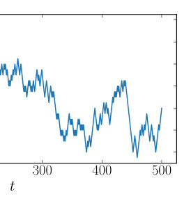
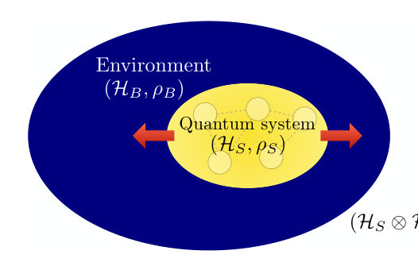

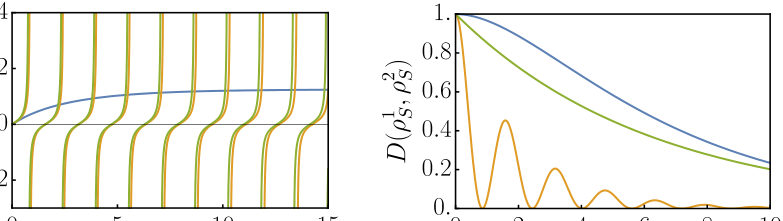
← Index · ← Previous · Next →
Authors: Ning Bao, Keiichiro Furuya, Jacob March
Type: theory · Category: statistical mechanics · PDF: https://arxiv.org/pdf/2607.06870v1
Analysis basis: full PDF text, analyzed in chunks
Topic relevance: 🔥 entanglement & information structure 4/5 · driven-dissipative phase transition 1/5 · non-equilibrium dynamics 1/5 · non-equilibrium universality 1/5
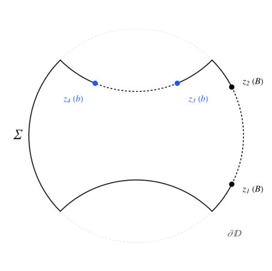
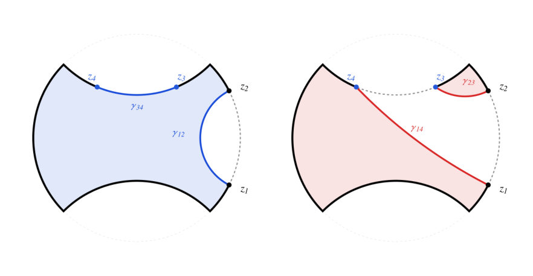
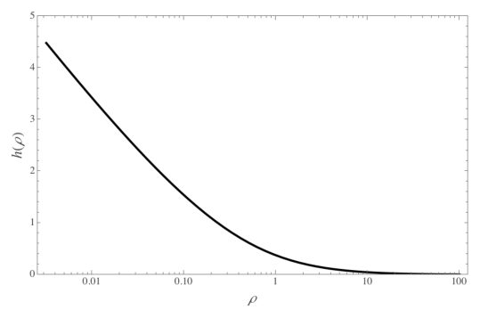
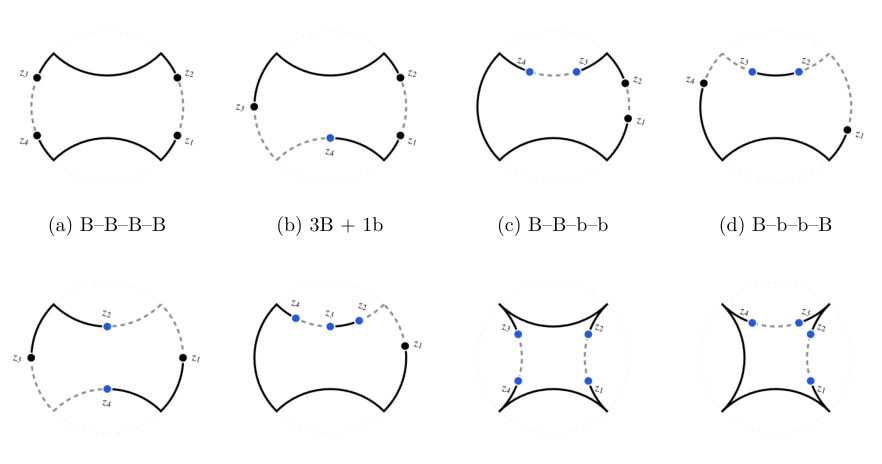
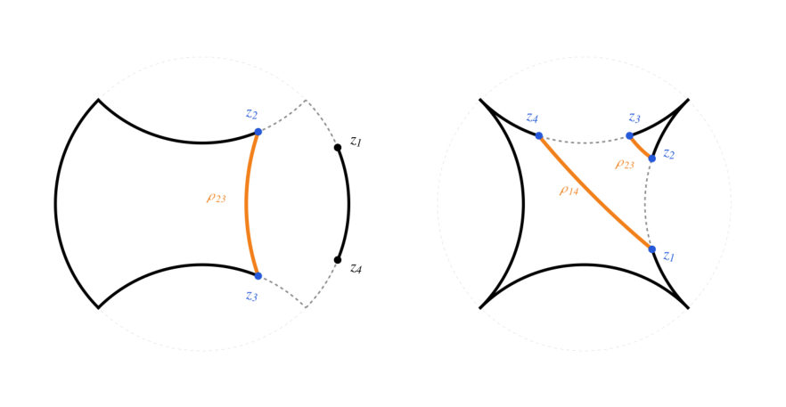
Summary. This paper explores the phase transitions and error-correcting properties of holographic geometries by analyzing pure-state systems derived from the surface/state correspondence. Key findings include a specific cross-ratio threshold relation governing entanglement wedge connectivity and demonstrating that fractalization processes yield universal fractal dimensions. It advances the understanding of how quantum information concepts manifest in gravitational dualities.
Why it may be interesting. While highly theoretical, the connection between entanglement structure (a key concept in quantum information) and geometric phase transitions provides deep insights into how correlations are encoded in spacetime geometry, relevant for understanding complex many-body ground states.
Main problem. The study investigates the error-correcting properties and phase structure of pure-state holographic geometries by analyzing how entanglement wedges are modified via the surface/state correspondence.
Main result. A cross-ratio threshold relation ($\eta'/\eta = e\Delta H/2$) is derived for connected/disconnected transitions, and fractalizing asymptotic boundaries yields tighter upper bounds on price and distance than tracing out RT-boundaries first.
Method. The authors use techniques from AdS/CFT correspondence, analyzing hyperbolic geometry in the Poincaré disk to derive threshold relations based on cross-ratios ($\eta, \eta'$).
Model / system. The model is pure-state holographic geometries within the $ ext{AdS}_3/ ext{CFT}_2$ framework. The analysis involves replacing mixed boundary subregions with Ryu–Takayanagi (RT) geodesics bounding entanglement wedges.
Key observables. Cross-ratio threshold relation ($\eta'/\eta = e\Delta H/2$), fractal dimension ($\alpha \approx 0.786$), Price, and distance upper bounds.
Important parameters / regimes. The shift parameter $\Delta H$, which is sourced by geodesics ending on RT boundaries; the standard two-interval threshold $\eta=1/2$.
Assumptions / limitations. The analysis relies on the surface/state correspondence generalizing holography, and it is noted that resulting upper bounds are procedure dependent.
Figures summary. Figures illustrate the structure of entanglement wedges ($\Sigma$) after partial traces, showing connected vs. disconnected topologies; other figures plot functions related to cross-ratios and boundary evolution over discrete steps ($m$).
Paper structure. The paper develops by first establishing the phase transition condition using cross-ratios in $ ext{AdS}_3/ ext{CFT}_2$, then generalizing this analysis to code properties via recursive hole-punching (uberholography), and finally comparing boundary evolution procedures.
We study the error-correcting properties of pure-state holographic geometries, in which mixed boundary subregions are replaced, via the surface/state correspondence, by the Ryu--Takayanagi (RT) geodesic bounding their entanglement wedges. In AdS$_3$/CFT$_2$ we derive a cross-ratio threshold relation $η'/η= e^{ΔH/2}$ for the connected/disconnected transition of the entanglement wedge when two holes are punched in such a geometry. The quantity $ΔH$ is sourced entirely by geodesics ending on RT boundaries. It shifts the standard two-interval threshold $η= 1/2$, and we classify when its sign is fixed by the pattern of hole endpoints. Turning to code properties, we show that the recursive hole-punching underlying uberholography cannot start within an RT-boundary, while an untouched asymptotic boundary can still fractalize, and we find numerically that in the configurations we study it does so with the universal fractal dimension $α\approx 0.786$. The resulting upper bounds on price and distance are nevertheless procedure dependent. In the configurations we study, punching holes on the asymptotic boundary while retaining the RT-boundary yields strictly tighter bounds than first tracing out the RT-boundary and then fractalizing.
Authors: Sara Turcotte, Lucas St-Jean, Amélie L. Pessonneaux, Ross Shillito, Bohdan Kulchytskyy, Eliott Ouellet, Jean Olivier Simoneau, Florian Hopfmueller, Matthew Hamer, Pascal Lemieux, Dany Lachance-Quirion, Baptiste Royer, Nicholas E. Frattini
Type: experiment · Category: quantum information and computing · PDF: https://arxiv.org/pdf/2607.06718v1
Analysis basis: full PDF text, analyzed in chunks
Topic relevance: 🔥 QC/QI experiment 4/5 · quantum measurements 2/5 · methods for driven-dissipative 1/5
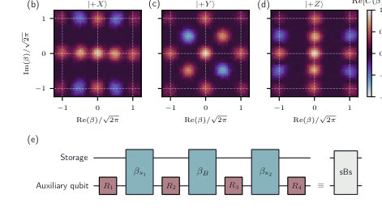
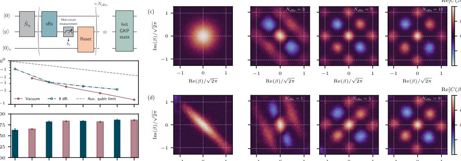
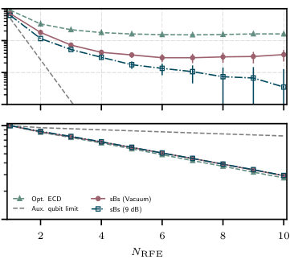
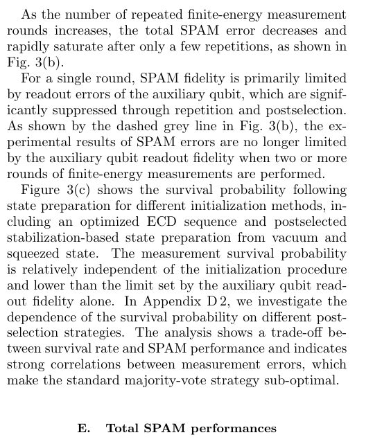
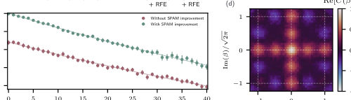
Summary. The research presents an advanced method to achieve high-fidelity quantum error correction on grid-state qubits using superconducting circuits. By integrating sophisticated stabilization protocols with improved measurement techniques, the authors dramatically reduced state preparation and measurement errors below $10^{-3}$. This breakthrough brings this hardware platform into parity with established transmon qubit performance metrics.
Why it may be interesting. This work directly tackles a critical hardware bottleneck—SPAM errors—in superconducting quantum computing platforms, providing concrete experimental benchmarks that advance fault tolerance feasibility.
Main problem. The primary challenge addressed is mitigating State Preparation and Measurement (SPAM) errors, which significantly limit the performance of quantum error correction (QEC) on grid-state qubits.
Main result. By combining high-performance QEC with improved measurement protocols, the authors achieved a combined SPAM error below $10^{-3}$, representing a two orders-of-magnitude improvement over previous state-of-the-art results.
Method. The work employs postselected stabilization protocols within a superconducting circuit architecture to prepare and measure grid states, coupled with advanced measurement error mitigation techniques.
Model / system. The system utilizes superconducting circuits in a cQED architecture, encoding logical information in a single-mode grid state. An auxiliary transmon qubit is coupled to the storage mode for implementing stabilization protocols like $sB_s$.
Key observables. Total SPAM error ($\epsilon_{SPAM}$), survival probabilities (for preparation and measurement), and Pauli expectation values ($\langle \hat{Y} angle$).
Important parameters / regimes. The target performance metric is an SPAM error below $10^{-3}$. Key physical parameters include storage mode coherence times ($T_{1,s}, T_{2,s}$) and the finite-energy envelope parameter $\Delta$.
Assumptions / limitations. Standard QEC alone cannot fix SPAM errors, necessitating the combined protocol. The analysis also explores trade-offs based on postselection policies (e.g., 'all-agree' vs. 'majority-vote').
Figures summary. Figures illustrate the experimental device setup and the $sB_s$ stabilization sequence. Other figures show characteristic function tomography of prepared states and plots detailing the dependence of survival probability and Pauli expectation values on the number of stabilization rounds.
Paper structure. The paper progresses by first establishing the need to overcome SPAM errors, then detailing the use of postselected stabilization protocols for state preparation (Chunk 2), followed by an analysis of measurement back-action and optimal postselection policies (Chunk 3), culminating in the demonstration of achieving low error rates experimentally (Chunk 1).
Grid state qubits offer a hardware-efficient approach to large-scale fault-tolerant quantum computing. They access the information redundancy required for quantum error correction by exploiting the large Hilbert space naturally available in harmonic oscillators. Superconducting architectures are particularly suitable to implement grid state qubits due to their fast and high-fidelity operations. Grid states in superconducting circuits enable quantum error correction (QEC) with performance beyond break-even. However, the state preparation and measurements (SPAM) errors of grid states has been a significant limitation to computational performances. In this work, we leverage high-performance QEC to enable repeat-until-success state preparation of both cardinal and magic states of the single-mode grid-state qubit. We combine this with an improved measurement protocol that corrects for both finite-energy envelope and auxiliary qubit readout errors, and increases robustness to photon loss. Our experiments, using both techniques, achieve a combined state-preparation and measurement error below $10^{-3}$. This represents two orders-of-magnitude improvement over the state of the art, bringing this platform on par with standard SPAM error levels measured in transmon qubits.
Authors: Wenxin Cheng, Chang Liu, Dekun Shen, Jiaxin Li, Shangyuan Wang, Hongyu Wang, Miming Cai, Jihao Xia, Peng Chen, Caihua Wan, Ka Shen, Xiufeng Han, Yuelin Zhang, Jinxing Zhang, Yangmu Li
Type: both · Category: other · PDF: https://arxiv.org/pdf/2607.06941v1
Analysis basis: full PDF text, analyzed in chunks
Topic relevance: 🔥 spintronics-quantum-optics interface 4/5 · QC/QI experiment 1/5 · methods for driven-dissipative 1/5 · quantum measurements 1/5
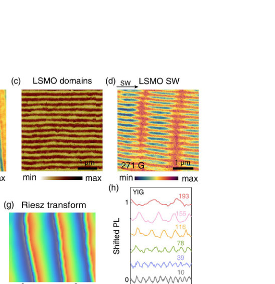
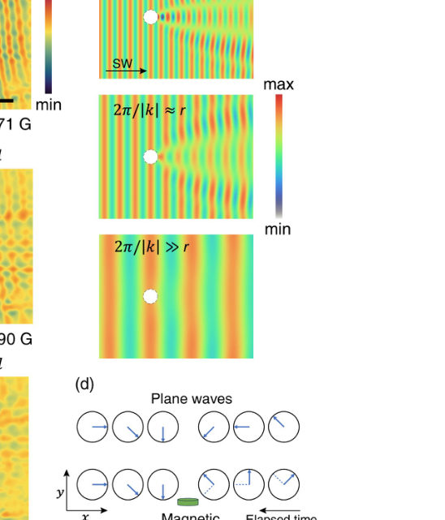
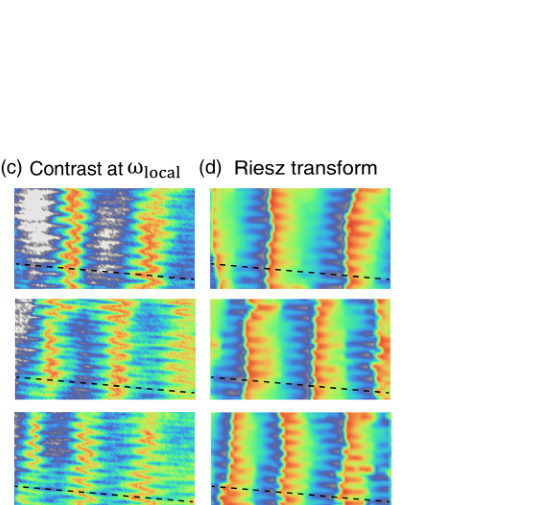
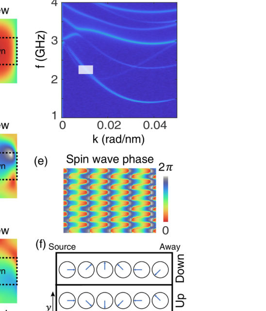
Summary. The research demonstrates the use of nitrogen-vacancy center spectroscopy to visualize spin waves in complex magnetic materials like YIG and LSMO. By analyzing PL contrast and applying advanced phase retrieval techniques, the authors mapped unique phenomena such as wavelength-dependent filtering and characteristic zig-zag wavefront distortions near magnetic domains. This advances spintronics by enabling fine control over spin wave propagation near structural defects.
Why it may be interesting. This work bridges quantum sensing (NV centers) with condensed matter magnetism, providing spatially resolved dynamics crucial for understanding how local magnetic structure dictates wave propagation—a key area for designing functional spintronic devices.
Main problem. Direct, real-space imaging of spin-wave propagation and wavefronts in magnetic materials with complex nanoscale structures is challenging.
Main result. The study successfully visualized wavelength-dependent filtering effects near scatterers and observed modified, zig-zagging spin wave wavefronts within antiferromagnetically coupled stripe domains.
Method. Scanning nitrogen-vacancy (NV) center spectroscopy combined with micromagnetic simulations was used to map local magnetic fields and spin-wave phase structure.
Model / system. The system involves spin waves in archetypal magnetic films like YIG and LSMO, exhibiting complex domain structures stabilized by interactions like the Dzyaloshinskii-Moriya interaction. The measurement relies on NV center resonance spectroscopy.
Key observables. PL contrast, local spin-wave phase (extracted via Riesz transform), field shifts ($\pm 7$ G), and wavefront bending/modification.
Important parameters / regimes. Wavelength dependence of scattering effects; comparison between uniform vs. patterned magnetic media; external magnetic fields controlling resonance frequencies.
Assumptions / limitations. The standard PL contrast equation neglects continuous laser pumping effects, and phase extraction in inhomogeneous backgrounds requires advanced techniques like the Riesz transform.
Figures summary. Figures show spin-wave PL contrast images in YIG and LSMO; Figure 2 illustrates wavefront bending near point scatterers; Figure 3 details domain structure analysis in LSMO using frequency scans and Riesz transforms; Figure 4 presents micromagnetic simulations of magnetization and dispersion relations.
Paper structure. The paper progresses from establishing the challenge of real-space imaging to presenting NV spectroscopy measurements on YIG (scatterer effects) and then tackling the complexity of LSMO stripe domains, culminating in detailed simulation comparisons.
Direct, real-space imaging of spin-wave propagation and wavefronts in magnetic materials is crucial for advancing both fundamental understanding of spin dynamics and the development of functional devices. This, however, remains a significant challenge, especially in materials with complex magnetic characteristics at the nanoscale. Here, we employ scanning nitrogen-vacancy center spectroscopy to achieve visualization of spin waves in two archetypical magnetic films: yttrium-iron-garnet and lanthanum strontium manganese oxide. We reveal a wavelength-dependent spin-wave filtering effect near point-like magnetic scatterers and a modified spin wavefront in antiferromagnetically coupled stripe domains. The spin-wave characteristics are explained using micromagnetic simulations and analytical calculations. These findings point to possible fine control of spin-wave propagation near complex magnetic structures and extend the scope of spin-wave imaging based on nitrogen-vacancy centers beyond uniform magnets.
Authors: Ella O. Lachman, Dave P. Pappas, Jayss Marshall, Josh Y. Mutus
Type: experiment · Category: quantum information and computing · PDF: https://arxiv.org/pdf/2607.06670v1
Analysis basis: full PDF text, analyzed in chunks
Topic relevance: 🔥 QC/QI experiment 4/5 · quantum measurements 1/5
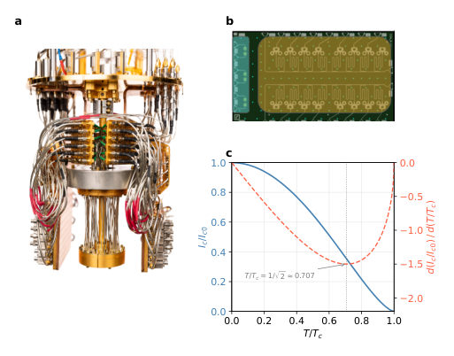
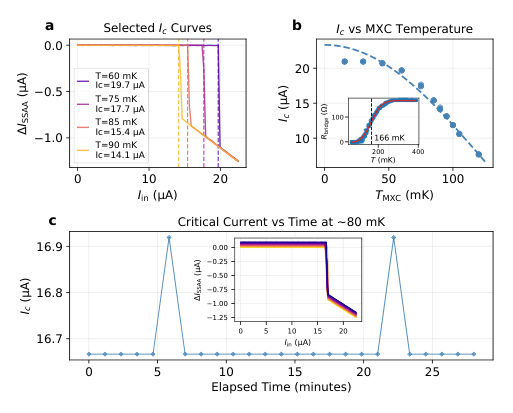
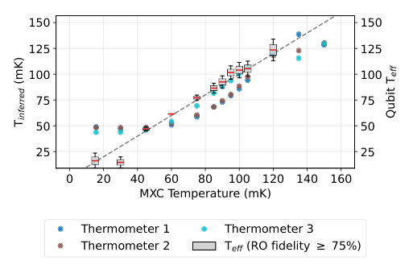
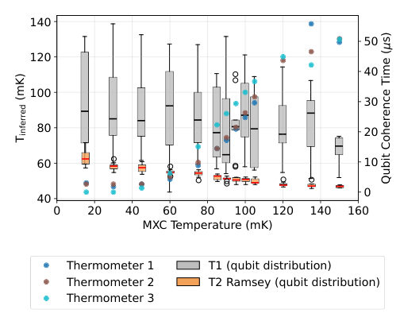
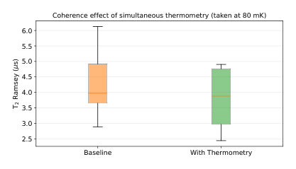
Summary. The authors present an integrated method using superconducting Dayem Bridges as local thermometers directly on qubit chips. By measuring the temperature dependence of the bridge's critical current, they achieve a simple and non-invasive way to monitor chip temperature at cryogenic levels. This technique successfully validates against standard qubit measurements and proves its utility for diagnosing temperature-dependent decoherence mechanisms in quantum processors.
Why it may be interesting. This work provides a direct, hardware-level diagnostic tool for characterizing the thermal environment of quantum processors, which is crucial input data for theoretical models predicting decoherence sources in solid-state qubits.
Main problem. Accurate, localized temperature knowledge is critical for optimizing superconducting qubit performance at millikelvin temperatures.
Main result. The integration of Dayem Bridges (DBs) on the same chip allows for a simple, non-invasive, and scalable measurement of local chip temperature that correlates well with established qubit thermometry methods.
Method. Temperature is determined by measuring the superconducting critical current ($I_c$) of an integrated DB bridge via I-V measurements, avoiding complex microwave calibration protocols.
Model / system. The system involves transmon qubits fabricated on a chip alongside superconducting Dayem Bridges. The thermometry relies on the temperature dependence of $I_c(T)$, which follows the Bardeen relation.
Key observables. Local chip temperature, critical current ($I_c$), qubit energy relaxation times ($T_1$) and dephasing times ($T_2$).
Important parameters / regimes. Temperature range from 10 mK to 150 mK; superconducting transition temperature ($T_c$); coherence time decay rates.
Assumptions / limitations. The method assumes that measuring $I_c$ is sufficient to determine the local chip temperature using known material parameters and the Bardeen relation.
Figures summary. Figures illustrate the co-location of qubits and DBs on a chip, show characteristic $I$-$V$ curves for DBs at different temperatures, and compare qubit coherence times ($T_1$, $T_2$) against inferred temperature from multiple DB thermometers versus the external Mixing Chamber (MXC) temperature.
Paper structure. The paper introduces the problem of on-chip thermometry, details the fabrication and principle of the DB thermometer using $I_c(T)$, validates its readings by comparing them to qubit measurements ($T_{ ext{eff}}$), and finally demonstrates its utility by correlating measured temperature variations with changes in qubit decoherence times.
Accurate knowledge of the on-chip temperature is essential for understanding and optimizing the performance of superconducting qubits, yet direct thermometry at millikelvin temperatures remains challenging. While qubits themselves are sensitive to the temperature of their environment, other factors may affect the qubits` effective temperature, and using them as thermometers with any accuracy requires specialized measurement protocols and qubit designs, limiting their practicality for routine diagnostics and adding complex infrastructure to any hardware testing apparatus. Here we demonstrate a complementary on-chip thermometry method based on superconducting Dayem bridges that are integrated on the same chip as transmon qubits. By extracting the critical current of the Dayem bridge from I-V measurements, we obtain a local, quantitative measure of the chip temperature without the need for microwave calibration or qubit-specific control sequences. To demonstrate the utility of the Dayem bridges as thermometers, we fabricate them in-situ with qubits on the same chip, calibrate the Dayem bridge critical current as a function of temperature, and characterize its resolution and stability at cryogenic temperatures. We additionally perform simultaneous measurements of the Dayem bridge thermometer and qubit excited-state population, and show agreement over the relevant temperature range, validating the method against established qubit thermometry. Furthermore, we correlate the independently measured chip temperature with qubit energy relaxation and dephasing times, demonstrating the utility of this approach for diagnosing temperature-dependent decoherence mechanisms. These results establish integrated Dayem bridges as a simple, non-invasive, and scalable tool for cryogenic hardware development, and on chip thermometry in superconducting quantum circuits.
Authors: Marco Knipfer, Alexander Roman, Katia Matcheva, Konstantin T. Matchev
Type: theory · Category: quantum information and computing · PDF: https://arxiv.org/pdf/2607.07197v1
Analysis basis: full PDF text, analyzed in chunks
Topic relevance: 🔥 entanglement & information structure 4/5
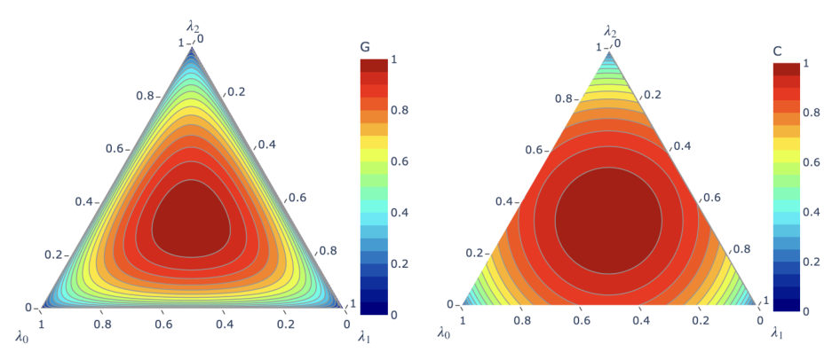
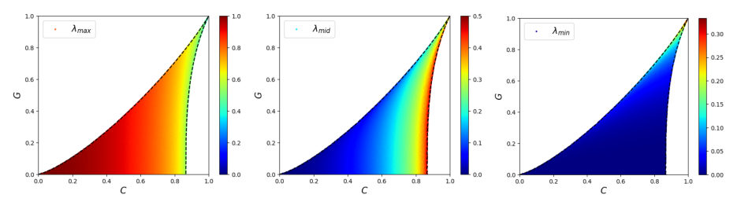
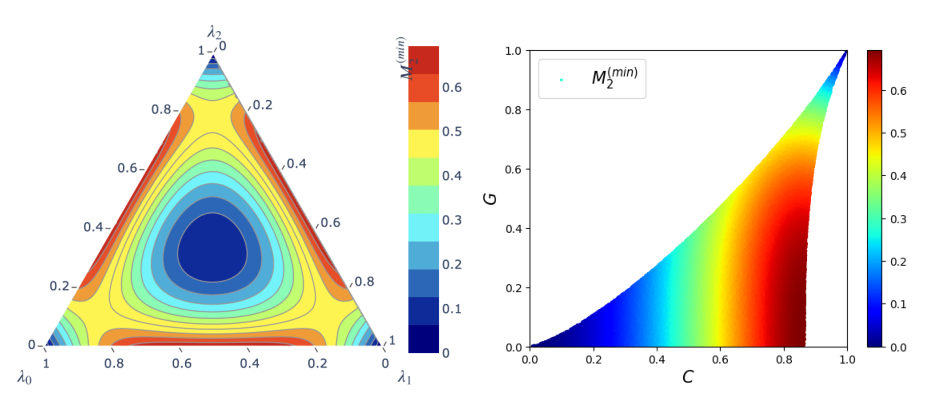
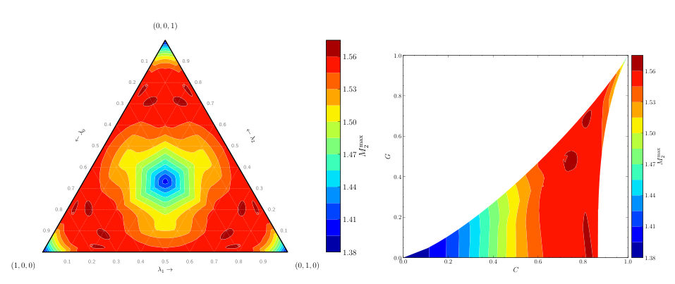
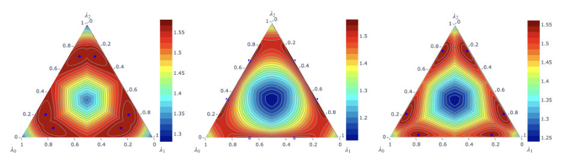
Summary. This paper theoretically characterizes the maximal 'magic' resource for bipartite quantum states involving qutrits and ququints. It establishes a general conjectured bound relating this magic to the dimension $d$ of the qudits. The work is significant for quantifying non-classical resources beyond standard entanglement measures.
Why it may be interesting. It provides rigorous theoretical bounds on non-classical resources (magic) that are crucial for understanding the limits of classical simulation capabilities for quantum systems.
Main problem. The paper investigates the interplay between entanglement and 'magic' (nonstabilizerness) to characterize the Pareto frontiers of extreme magic for multi-qutrit quantum states.
Main result. A conjectured general bound for two qudits with prime dimension $d$ is $\max(M_2) \le \ln[ d^4 / (2d^2 - 1) ]$, which was successfully tested and confirmed for $d=2, 3,$ and $5$.
Method. The analysis involves deriving analytical expressions for the minimal and maximal magic surfaces by parameterizing the state space using Schmidt coefficients and optimizing over local unitaries.
Model / system. The study focuses on bipartite quantum states of two qutrits ($d=3$) and two ququints ($d=5$), generalizing to arbitrary prime-dimensional qudits. The state is analyzed via its Schmidt decomposition.
Key observables. Magic (quantified by stabilizer Rényi entropy $M_2$), Entanglement (measured by concurrence and negativity), and the purity $\Pi_2$.
Important parameters / regimes. The dimension of the qudits ($d=3, 5$) and the Schmidt coefficients ($\lambda_i$).
Assumptions / limitations. The analysis relies on using the Schmidt decomposition parametrization for the state manifold; the conjectured bound is not formally proven beyond tested cases.
Figures summary. Figures illustrate how the maximal magic is found by taking the upper envelope of curves generated by fixing local unitaries across the Schmidt simplex, showing the optimal path through the parameter space.
Paper structure. The paper progresses from establishing the necessity of both entanglement and magic for quantum advantage to analyzing the 2D parameter space of two qutrits using multiple entanglement measures, culminating in a general conjecture for prime-dimensional qudits.
Achieving a genuine quantum advantage relies on two distinct non-classical resources that restrict efficient classical simulation: entanglement and magic (nonstabilizerness). We investigate the interplay between these resources by characterizing the Pareto frontiers of extreme magic at fixed entanglement for systems of two qutrits ($d=3$) and two ququints ($d=5$). Unlike the case of two qubits, the Schmidt spectrum for two qutrits features two independent entanglement parameters, resulting in two-dimensional Pareto surfaces. For the lower frontier, we recast the minimal magic as a compact function of concurrence and negativity, with a maximal value of $\ln 2$. For the upper frontier, we determine the maximal stabilizer Rényi entropy to be $M_2 = \ln(81/17) \approx 1.561$, which tightens the previous theoretical bound of $\ln 5\approx 1.609$ and improves on earlier numerical estimates. The maximum magic is achieved at eighteen distinct maxima categorized into three families of six permutation-equivalent spectra. We provide analytical expressions for the maximal magic in the neighborhood of each maximum and for the corresponding maximally magical states which turn out to be Weyl-Heisenberg-covariant fiducial states for mutually unbiased bases. Finally, numerical analysis of two ququints ($d=5$) reveals six permutation-inequivalent maxima with a peak magic value of $M_2 = \ln(625/49) \approx 2.546$. Based on these findings, we conjecture that the maximal magic for a bipartite system of two qudits with prime dimension $d$ is given by $\ln [ d^4 / (2d^2 - 1) ]$, which reproduces the previously known value for qubits, as well as the values derived here for qutrits and ququints.
Authors: Timur Khudaiberganov
Type: theory · Category: other · PDF: https://arxiv.org/pdf/2607.07591v1
Analysis basis: full PDF text, analyzed in chunks
Topic relevance: Tavis-Cummings & cavity-many-emitter 3/5 · correlated cavity matter 3/5 · driven-dissipative phase transition 3/5 · methods for driven-dissipative 3/5 · correlated / nonlocal dissipation 2/5 · entanglement & information structure 2/5 · non-equilibrium universality 2/5 · Dicke superradiance 1/5 · Keldysh / 2PI / non-Gaussian methods 1/5 · analog quantum simulation 1/5 · exotic spin models in light-matter 1/5 · interference shaping light 1/5 · non-equilibrium dynamics 1/5 · superradiant laser 1/5
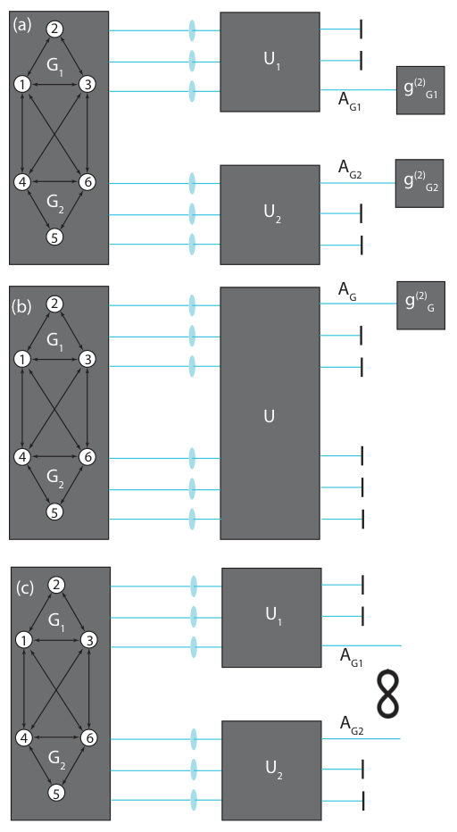
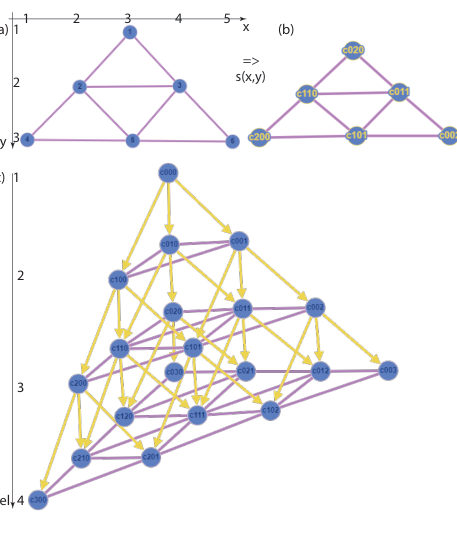
Summary. The paper develops a geometric framework to understand and enhance photon blockade effects in large multimode quantum optical systems. It introduces the concept of 'dark-state typicality,' demonstrating that increasing system complexity leads to macroscopically robust non-classical light generation. By analyzing these correlations as invariant manifolds, it provides theoretical tools for designing scalable quantum devices resilient to decoherence.
Why it may be interesting. This work provides a powerful generalization beyond traditional Decoherence-Free Subspaces (DFS) by framing robustness in terms of invariant manifolds defined by correlation invariants. This geometric approach is highly relevant for designing stable quantum devices operating far from ideal conditions.
Main problem. The primary challenge is developing a scalable method to generate robust non-classical light (sub-Poissonian statistics) in complex, multimode quantum optical systems while mitigating decoherence effects.
Main result. The paper introduces 'dark-state typicality,' showing that as the number of modes increases, the blockade subspace asymptotically occupies a unit fraction of the total Hilbert space, leading to macroscopic robustness.
Method. The work employs geometric interpretations using high-dimensional vector analysis (dot products) and extends this to continuous mode operators defined over functional spaces. It analyzes stability via Liouvillian spectral gaps.
Model / system. The system is modeled as multimode quantum optical systems, such as semiconductor microresonators, described by bosonic operators ($\hat{a}_i$). The theory develops from discrete graph structures to continuous mode functions $\phi(x)$ over a domain $\Omega$.
Key observables. Second-order correlation function ($g^{(2)}_\Sigma$), the blockade condition (e.g., $\mathbf{c}^{(n)} \cdot \mathbf{v} = 0$), and entanglement witnesses ($ ext{CEHZ}$).
Important parameters / regimes. The number of modes ($M$) in the large $M$ limit, the Liouvillian spectral gap ($\Delta$), and the order of correlation ($n$).
Assumptions / limitations. In the continuum case, it assumes that the set of states satisfying blockade forms an invariant manifold under Liouvillian dynamics. In the discrete case, approximations are made regarding weak pumping limits.
Figures summary. Figures illustrate schemes for correlation zeros and blockade conditions in both discrete (graph-based) and continuous mode settings, visualizing the protected 'bowl' manifold against decoherence.
Paper structure. The paper progresses from analyzing discrete blockade mechanisms on graphs to establishing a general geometric framework using continuum operators. It then analyzes the stability of these blockaded states by relating them to invariant manifolds governed by the Liouvillian spectral gap, ultimately showing how this leads to robust non-classical light.
We present a geometric interpretation of the sum photon blockade effect in multimode quantum optical systems, such as semiconductor microresonators. The blockade condition \(c^{(n)} \cdot v = 0\) reflects the orthogonality of the \(n\)-photon amplitude vector to a target mode vector in an \(N\)-dimensional Hilbert space, visualized as the confinement of the state to a hyperplane. A key result is the calculation of the maximum probability of the system remaining in the blockade subspace under the influence of decoherence processes (in particular, dephasing), which determines the practical feasibility and robustness of the effect. This approach extends to higher-order correlators \(g^{(2)}_Σ\) and cross-correlations, enabling the design of scalable quantum devices. We introduce the concept of "dark-state typicality": as the number of modes \(M\) increases, the dark subspace annihilated by the collective mode operator asymptotically occupies a unit fraction of the \(n\)-boson Hilbert space. This allows the transition from fragile, finely tuned mechanisms to macroscopically robust non-classical light in large multimode bosonic architectures. We consider continuum collective modes, hypotheses on correlation zeros and invariant manifolds, as well as the relationship between blockade and entanglement.
Authors: Jiaxin Liu, Zuoxian Wang, Danyue Ma
Type: theory · Category: quantum information and computing · PDF: https://arxiv.org/pdf/2607.07434v1
Analysis basis: full PDF text, analyzed in chunks
Topic relevance: Keldysh / 2PI / non-Gaussian methods 3/5 · driven-dissipative phase transition 3/5 · methods for driven-dissipative 3/5 · correlated / nonlocal dissipation 2/5 · entanglement & information structure 2/5 · non-equilibrium universality 2/5 · quantum measurements 2/5 · Kondo & dissipative impurity 1/5 · Tavis-Cummings & cavity-many-emitter 1/5 · analog quantum simulation 1/5 · correlated cavity matter 1/5 · measurement-induced transitions 1/5 · non-equilibrium dynamics 1/5
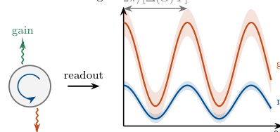
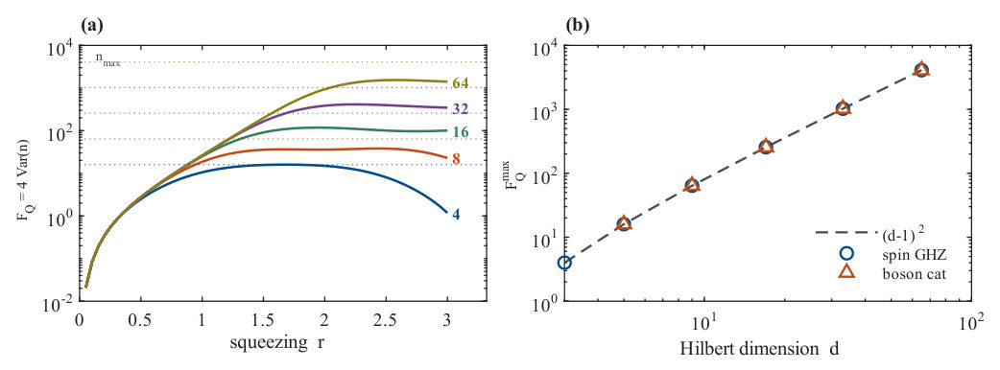
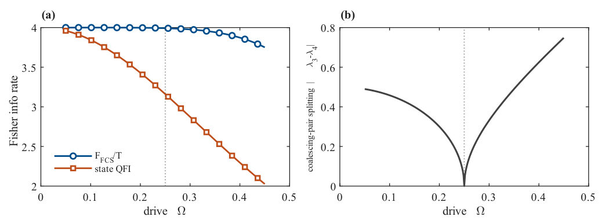
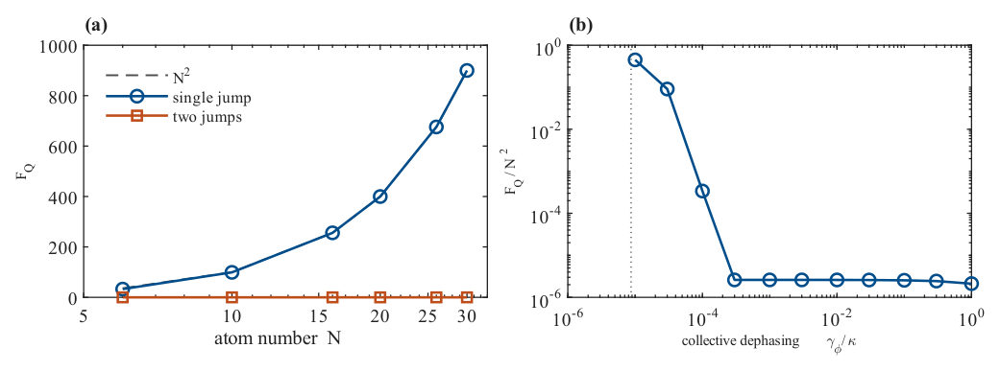
Summary. This work establishes a spectral-width limit on the Quantum Fisher Information for non-Hermitian quantum sensors. The authors prove that while engineered loss and gain can dramatically amplify the sensor's output signal, this amplification does not enhance the fundamental measurement precision beyond a bound set by the generator's energy spread. This has significant implications for designing high-precision quantum measurements in realistic open systems.
Why it may be interesting. It provides a rigorous theoretical framework quantifying the fundamental limits of precision in complex, realistic quantum systems that inherently involve dissipation (e.g., cavity QED or optical sensing).
Main problem. The core problem is determining whether enhanced signal amplification observed in non-Hermitian quantum sensors translates into genuine, measurable improvements in the achievable precision (Quantum Fisher Information).
Main result. The Quantum Fisher Information is fundamentally capped by a spectral width limit ($ ext{QFI} \le [\Delta(G) T]^2$), demonstrating that non-Hermiticity amplifies the response but does not source the ultimate measurement information.
Method. The authors prove an upper bound on the QFI using techniques involving the dilation of open evolution to a unitary description and analyzing the generator's spectral properties.
Model / system. The analysis focuses on open quantum sensors whose parameter ($ heta$) is imprinted coherently via a Hamiltonian generator $G = \partial_ heta H$, incorporating engineered loss, gain, and non-reciprocity.
Key observables. Quantum Fisher Information ($F_Q$), Spectral Width ($\Delta(G)$), Attainable Dwell Time ($ au_{\max}$)
Important parameters / regimes. Spectral width of the generator $\Delta(G)$, Interrogation Time $T$, Photon-number cutoff.
Assumptions / limitations. The parameter must enter coherently through a Hamiltonian generator ($G = \partial_ heta H$), and loss/gain rates must be independent of $ heta$.
Figures summary. Figures illustrate that non-Hermiticity amplifies the signal response but leaves the QFI bounded by $[\Delta(G) T]^2$, and finite spectral cutoffs restore this cap.
Paper structure. The paper establishes a general bound on QFI for open sensors, proves its independence from specific dissipative mechanisms, and then applies this limit to specialized cases like photonic scattering channels using dwell-time operators.
Engineered loss, gain, and non-reciprocity can sharply amplify a sensor's response, and exceptional points and the skin effect are widely proposed as routes to more precise quantum sensors. Some predict an exponentially large quantum Fisher information, the quantity that sets the best achievable precision, yet whether this amplified response is genuine measurement information has remained unsettled. We prove that it is not. For any open sensor whose parameter is imprinted coherently by a Hamiltonian, with loss, gain, non-reciprocity, and readout held fixed, the quantum Fisher information is capped by a single quantity, the spread between the largest and smallest energy the generator can impart, independent of the non-Hermitian dynamics. Amplification enlarges the response but not the information. The reported exponential gains arise only when that spread is unbounded, and any finite spread, such as a photon-number cutoff, restores the cap. The same limit governs dissipative probe preparation and spectral singularities. For photonic sensors the cap takes an operator form in which the information of any probe, classical or entangled, is set by the photon's dwell time at the perturbation, and it contains the recently derived scattering limits as special cases. Non-Hermiticity thus shapes a sensor's dynamics but does not source its precision, and the generator's spread and the attainable dwell time benchmark future non-Hermitian sensing proposals.
Authors: Graeme Pleasance
Type: theory · Category: other · PDF: https://arxiv.org/pdf/2607.07332v1
Analysis basis: full PDF text, analyzed in chunks
Topic relevance: correlated / nonlocal dissipation 3/5 · methods for driven-dissipative 3/5 · non-equilibrium dynamics 3/5 · Keldysh / 2PI / non-Gaussian methods 2/5 · driven-dissipative phase transition 2/5 · entanglement & information structure 2/5 · non-equilibrium universality 2/5 · Kondo & dissipative impurity 1/5 · analog quantum simulation 1/5 · scars & prethermalization 1/5



Summary. This lecture notes serve as an introduction to quantifying quantum non-Markovianity by drawing parallels between classical stochastic processes and their quantum mechanical counterparts. It details rigorous criteria based on concepts like CP-divisibility and state distinguishability. The paper provides theoretical tools to analyze memory effects in open quantum systems, which is vital for understanding realistic decoherence dynamics.
Why it may be interesting. This is highly relevant for AMO physics and open quantum systems as it provides a comprehensive theoretical toolkit for diagnosing when memory effects (non-Markovianity) are present in system evolution, which is crucial for understanding decoherence mechanisms.
Main problem. The core problem is developing rigorous methods to characterize quantum non-Markovianity, as classical definitions are insufficient for quantum dynamics.
Main result. The paper establishes an introduction by linking classical concepts (like stochastic matrices) to their quantum analogs using criteria such as CP-divisibility and state distinguishability. It shows that Markov processes satisfy specific mathematical structures related to time evolution.
Method. The analysis employs theoretical derivations, comparing classical probability theory with quantum dynamical maps ($\Phi_t$). Specific diagnostics include checking for complete positivity (CP) via the Choi matrix and analyzing the trace norm of difference density matrices.
Model / system. The general setting is open quantum systems interacting with an environment. Models range from abstract stochastic processes to specific physical examples like pure dephasing dynamics in qubits or particle-fluid collisions approximated by random walks.
Key observables. Quantum non-Markovianity, CP-divisibility, state distinguishability, Choi matrix eigenvalues, and the trace norm of the difference density matrix ($\|\Delta ho_S(t)\|_1$).
Important parameters / regimes. Time ($t$), coupling strengths ($\gamma(t)$), and system size (e.g., qubits).
Assumptions / limitations. The notes focus on intrinsic Markovianity criteria, restricting classical analysis to finite sample spaces $\Omega$, and making approximations for continuous processes like Brownian motion.
Figures summary. Figure 1 illustrates a trajectory of an unbiased random walk on the integer lattice ($\mathbb{Z}$) over time steps $T = \{0, 1, ..., 500\}$.
Paper structure. The notes proceed by first reviewing classical stochastic processes and establishing hierarchies (Markov $\subset$ CKE $\subset$ P-divisible). They then transition to quantum systems, focusing on CP conditions using the Choi matrix and analyzing non-Markovianity via state distinguishability measures.
The study of non-Markovian quantum processes has attracted significant interest in recent decades, giving rise to several competing notions of quantum non-Markovianity. These notes serve as an introduction to the topic for graduate students familiar with quantum mechanics and probability theory. Owing to the vastness of the literature, we focus on two prominent characterizations of quantum Markovianity based on the divisibility of quantum channels and monotonically decreasing state distinguishability. The correspondence between classical concepts (stochastic matrices, Chapman-Kolmogorov equation) and their quantum analogs (dynamical maps, CP-divisibility) is emphasized throughout.
Authors: Prashanta Bauri, Debasish Mondal
Type: theory · Category: statistical mechanics · PDF: https://arxiv.org/pdf/2607.07649v1
Analysis basis: full PDF text, analyzed in chunks
Topic relevance: methods for driven-dissipative 3/5 · non-equilibrium dynamics 3/5 · Keldysh / 2PI / non-Gaussian methods 2/5 · driven-dissipative phase transition 2/5 · non-equilibrium universality 2/5 · Frenkel-Kontorova 1/5 · analog quantum simulation 1/5 · correlated / nonlocal dissipation 1/5 · measurement-induced transitions 1/5 · quantum measurements 1/5
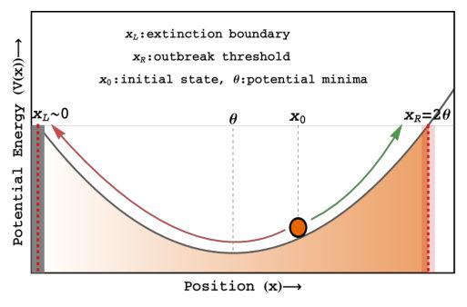
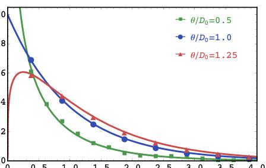
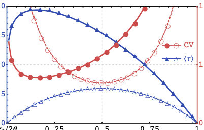
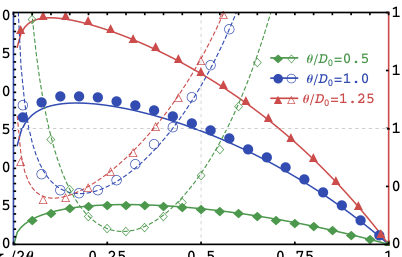
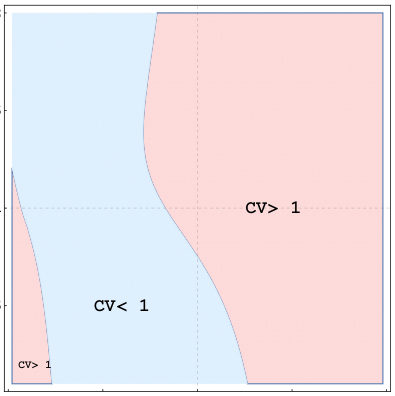
Summary. This paper analyzes escape dynamics for a Feller diffusion process characterized by inhomogeneous fluctuations within a bounded interval. It calculates key metrics like mean exit time and splitting probabilities, demonstrating that the spatial variation of noise fundamentally alters stochastic outcomes compared to standard models. The results highlight how these non-uniform fluctuations bias system trajectories toward one absorbing state over another.
Why it may be interesting. The study provides a detailed theoretical framework for analyzing stochastic decision-making under spatially varying noise, which has direct analogies in quantum measurement theory or open quantum systems where dissipation/noise is non-uniform across parameter space.
Main problem. The study investigates inhomogeneous fluctuation-induced asymmetric escape from a Feller diffusion confined within a finite interval with two competing absorbing boundaries.
Main result. Inhomogeneous noise leads to non-trivial asymmetries in escape rates, causing the mean exit time to exhibit complex dependence on initial conditions and drift-to-noise ratios.
Method. The analysis involves solving the Fokker-Planck Equation (FPE) for the process, utilizing Laplace transforms to calculate mean first-passage times ($\langle au angle$), and comparing results against known homogeneous models like the Ornstein-Uhlenbeck process.
Model / system. The model is an overdamped Brownian motion in a shifted harmonic potential with state-dependent diffusivity, described by a Langevin equation. The system is confined between two absorbing boundaries: an extinction site ($x_L$) and an outbreak point ($x_R$).
Key observables. Mean exit time ($\langle au angle$), splitting probabilities ($\epsilon_{xL}, \epsilon_{xR}$), and the Coefficient of Variation (CV) of the escape time.
Important parameters / regimes. The drift-to-noise strength ratio ($ heta/D_0$) is crucial, determining whether the origin boundary is accessible or an entrance boundary for the Feller process.
Assumptions / limitations. The analysis relies on the applicability of the Feller process framework and assumes that the comparison to homogeneous systems (like OU) provides a useful benchmark for understanding noise effects.
Figures summary. Figures illustrate the stationary PDF variation with $ heta/D_0$, compare mean escape times ($\langle au angle$) and CVs between homogeneous and inhomogeneous noise, and map out phase diagrams showing asymmetries in splitting probabilities ($\epsilon_{xR} - \epsilon_{xL}$).
Paper structure. The paper establishes the Feller diffusion model via its SDE/FPE, derives analytical solutions for observables like $\langle au angle$ using special functions (Kummer's equation), and systematically compares these results against established benchmarks from homogeneous processes (OU) to highlight the unique effects of inhomogeneous noise.
We present an inhomogeneous fluctuation-induced asymmetric escape event of a Feller diffusion confined to a finite interval with two competing absorbing boundaries. The dynamics correspond to an overdamped Brownian motion in a shifted harmonic potential with state-dependent diffusivity. We set two exit points (equal potential energies), equidistant from the potential minima: an extinction site near the origin and an outbreak point. The multiplicative fluctuations are suppressed near the extinction boundary, biasing trajectories toward the outbreak state. The mean exit time exhibits a non-monotonic dependence on the initial condition and the drift-to-noise strength ratio, attaining a maximum when the particle is initialized toward the extinction (low-noise) site. The outbreak possibility is more likely even if the process started with a small initial bias towards the low-noise boundary. The spatial location of the lowest coefficient of variation (CV) is nicely corroborated by the maximum exit time, which is the hallmark of a stochastic escape from an interval. The fluctuation in escape time is found to dominate its mean as a non-trivial function of the drift-to-noise strength and the initial spatial bias. The observed asymmetries in escape also shape the speed-accuracy trade-off in stochastic decision-making events.
Authors: He-Lin Li, Zhen-Gang Zhu, Gang Su
Type: theory · Category: strongly correlated electrons · PDF: https://arxiv.org/pdf/2607.06966v1
Analysis basis: full PDF text, analyzed in chunks
Topic relevance: analog quantum simulation 3/5 · methods for driven-dissipative 3/5 · Keldysh / 2PI / non-Gaussian methods 2/5 · Kondo & dissipative impurity 2/5 · non-equilibrium dynamics 2/5 · driven-dissipative phase transition 1/5 · exotic spin models in light-matter 1/5 · non-equilibrium universality 1/5 · spintronics-quantum-optics interface 1/5
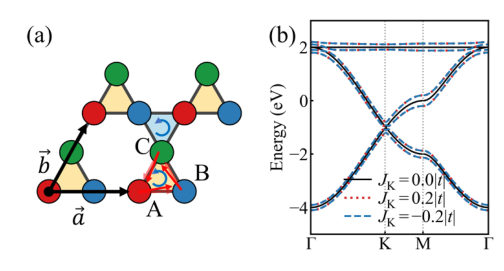
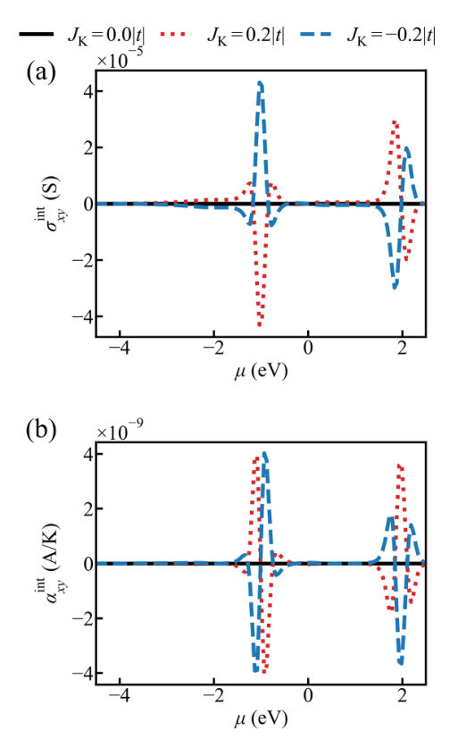
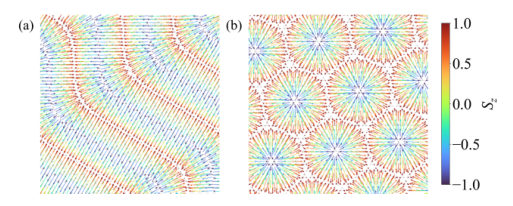
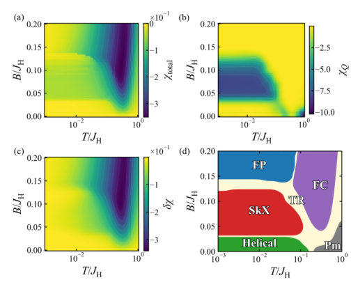
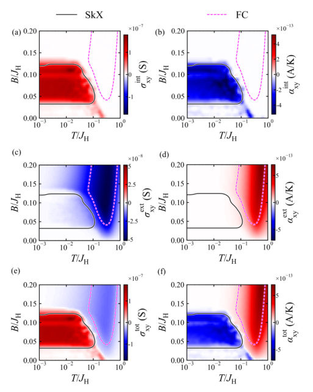
Summary. This theoretical work analyzes anomalous Hall and Nernst effects in a Kagome lattice by separating their origins into contributions from static spin chirality (intrinsic) and dynamic spin fluctuations (extrinsic). The key finding is the identification of a phase crossover where thermal fluctuations suppress topological responses, allowing dynamical chiral fluctuations to dominate transport behavior.
Why it may be interesting. While focused on condensed matter magnetism, the rigorous separation of intrinsic (topological/Berry curvature) versus extrinsic (scattering-rate dependent) responses mirrors general principles used in analyzing non-equilibrium transport in complex quantum systems.
Main problem. The study investigates the distinct roles of static versus fluctuating spin chiralities in driving anomalous Hall and Nernst effects in a frustrated magnetic lattice.
Main result. A pronounced mechanistic crossover is demonstrated: intrinsic transport is governed by Berry curvature in ordered phases, while dynamic fluctuations dominate near the order-disorder critical regime.
Method. The authors combine Monte Carlo simulations with semiclassical Boltzmann transport theory to calculate anomalous scattering rates using perturbation expansions up to the second Born approximation.
Model / system. The system is a two-dimensional Kagome lattice hosting itinerant electrons coupled to localized magnetic moments via an s-d exchange interaction. The analysis uses a Kondo-type Hamiltonian framework.
Key observables. Anomalous Hall Conductivity (AHC, $\sigma_{xy}$) and Anomalous Nernst Effect ($\alpha_{xy}$), decomposed into intrinsic (Berry curvature) and extrinsic (skew scattering) contributions.
Important parameters / regimes. Temperature ($T$), chemical potential ($\epsilon$), magnetic order parameters, and the strength of the exchange coupling ($J_K$).
Assumptions / limitations. The analysis employs a low-energy effective mass approximation for band dispersion and utilizes the relaxation time approximation within the Boltzmann equation.
Figures summary. Figures illustrate phase diagrams showing topological quantities ($\chi_{total}$, $\chi_Q$, etc.) across T-B parameter space, and show real-space spin configurations corresponding to different magnetic phases (e.g., skyrmion crystal).
Paper structure. The paper proceeds by deriving the general expressions for anomalous transport coefficients using scattering theory, then applying these formalisms to the Kagome lattice to explicitly separate and analyze the contributions from static vs. dynamic chiralities across various magnetic phase regimes.
We theoretically investigate the anomalous Hall and Nernst effects (AHE and ANE) in a two dimensional Kagome lattice to uncover the distinct roles of static and fluctuating scalar spin chi ralities. Employing Monte Carlo simulations incorporating with a tight binding Hamiltonian via the s-d exchange interaction, we explicitly evaluate the anomalous transport coefficients. A key finding is the systematic disentanglement of the macroscopic responses into an intrinsic contribu tion, governed by momentum space Berry curvature induced by static chirality, and an extrinsic skew scattering contribution driven by real space dynamical spin fluctuations. We demonstrate a pronounced mechanistic crossover: deep in magnetically ordered phases like the skyrmion crystal, the intrinsic Berry curvature dictates the transport behavior. However, approaching the magnetic order-disorder critical regime, strong thermal fluctuations disrupt static noncoplanar spin configu rations, drastically suppressing intrinsic responses. Here, dynamical chiral fluctuations emerge as the dominant driving force. By delineating the phase regimes governed by static versus fluctuating chiralities, this work elucidates the distinct microscopic mechanisms dictating anomalous transport in frustrated magnetic systems.
Authors: Qi-wen Peng, Krzysztof Sacha, Chu-hui Fan
Type: theory · Category: disordered systems and neural networks · PDF: https://arxiv.org/pdf/2607.07225v1
Analysis basis: full PDF text, analyzed in chunks
Topic relevance: driven-dissipative phase transition 3/5 · methods for driven-dissipative 3/5 · non-equilibrium dynamics 3/5 · non-equilibrium universality 2/5 · Frenkel-Kontorova 1/5 · Keldysh / 2PI / non-Gaussian methods 1/5 · Kondo & dissipative impurity 1/5 · analog quantum simulation 1/5 · scars & prethermalization 1/5
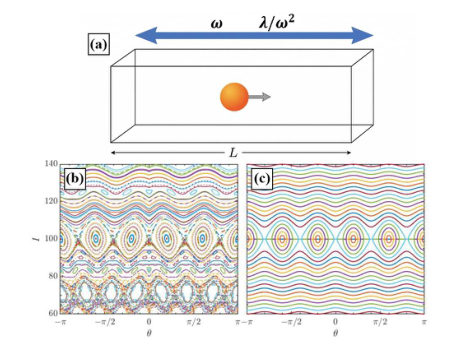
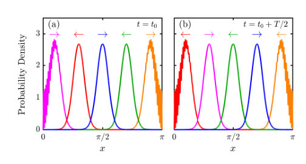
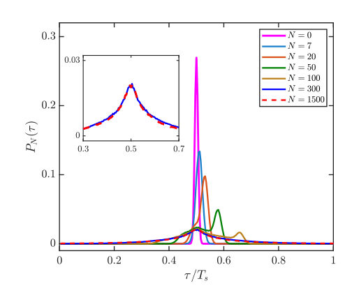
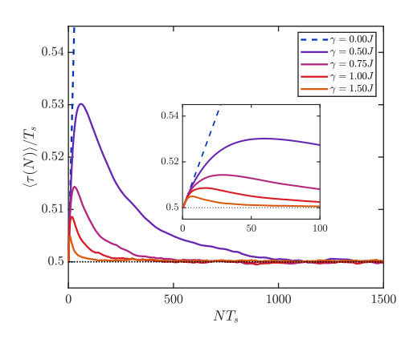
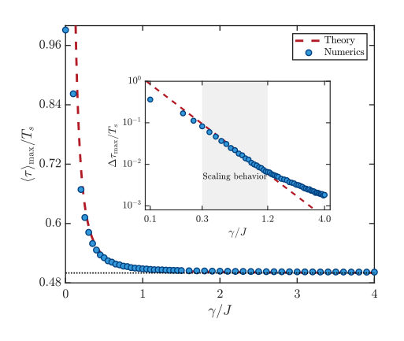
Summary. The authors theoretically prove the existence of the Quantum Boomerang Effect in time-crystalline structures by analyzing wavepacket dynamics. They map the complex Floquet evolution onto a disordered tight-binding model, showing that temporal disorder causes the probability density to initially drift but ultimately return to its starting point. This demonstrates that disorder can stabilize quantum coherence in periodically driven systems.
Why it may be interesting. This work connects concepts from Anderson localization (a hallmark of disorder) to time-periodic systems (time crystals), providing a novel mechanism for understanding coherence revival in driven quantum matter.
Main problem. To theoretically establish and quantitatively characterize the Quantum Boomerang Effect (QBE) entirely within the time domain using a periodically driven system.
Main result. The QBE is confirmed in the time domain, showing that temporal disorder can induce a counterintuitive 'drift-and-return' behavior, stabilizing the mean arrival time through mechanisms analogous to Anderson localization.
Method. The continuous Floquet dynamics are mapped onto a discrete disordered tight-binding lattice using maximally localized Floquet-Wannier states and analyzed via secular approximation techniques.
Model / system. A quantum particle in a 1D potential well subjected to periodic time driving, modeled by an effective Hamiltonian that incorporates temporal disorder ($\gamma$).
Key observables. Mean temporal center of mass of the probability density $\langle au(N) angle$, and the maximum temporal shift $\Delta au_{ ext{max}}$.
Important parameters / regimes. The ratio of hopping strength to disorder strength ($J/\gamma$), and the resonance condition ($\omega = s\Omega$).
Assumptions / limitations. The secular approximation is used to derive effective Hamiltonians, which are local descriptions valid near specific resonances.
Figures summary. Figures compare phase-space portraits (Fig. 1) and show probability densities $P_N( au)$ demonstrating the drift and return behavior over time steps (Fig. 3).
Paper structure. The paper progresses from establishing the QBE in a general Floquet context, deriving effective Hamiltonians via secular approximation, mapping to a disordered tight-binding model, and finally analyzing the role of disorder strength ($\gamma$) on the temporal dynamics.
The quantum boomerang effect (QBE) is a unique dynamical signature of Anderson localization, characterized by a launched wavepacket that initially drifts but ultimately returns to its initial position due to fundamental quantum interference. In this work, we theoretically establish and quantitatively characterize the QBE in a time-crystalline structure using a periodically driven quantum particle in a one-dimensional potential well. By constructing maximally localized Floquet-Wannier states and introducing temporal disorder, we rigorously map the continuous Floquet dynamics onto a discrete disordered tight-binding lattice. By positioning a detector at a fixed spatial coordinate, we monitor the temporal evolution of the wavepacket, to extract the mean temporal center of mass of the probability density in a time-crystalline structure. This mean temporal center of mass exhibits an initial ballistic expansion, followed by a pronounced U-turn, and ultimately returns to its initial temporal position after long-time evolution. These results confirm the existence of the complete QBE in the time domain. They also demonstrate that non-trivial dynamics can be explored within time-crystalline systems, even though these structures already possess an inherent temporal periodicity.
Authors: Jurek Frey, Frank K. Wilhelm, Matthias M. Müller
Type: theory · Category: quantum information and computing · PDF: https://arxiv.org/pdf/2607.07549v1
Analysis basis: full PDF text, analyzed in chunks
Topic relevance: spintronics-quantum-optics interface 3/5 · QC/QI experiment 2/5 · methods for driven-dissipative 2/5 · quantum measurements 2/5 · Keldysh / 2PI / non-Gaussian methods 1/5 · correlated / nonlocal dissipation 1/5 · driven-dissipative phase transition 1/5 · entanglement & information structure 1/5 · exotic spin models in light-matter 1/5 · non-equilibrium dynamics 1/5
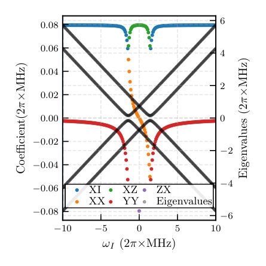
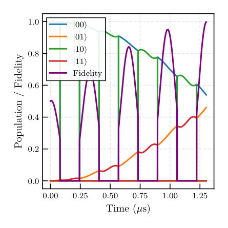
Summary. This paper tackles the critical challenge of controlling entangling gates in diamond color-centers by analyzing the system's hyperfine interactions. Using advanced quantum control methods like QOC and dynamical decoupling, the authors derive protocols for realizing three types of entanglement gates. The results confirm feasibility while highlighting limitations related to nuclear spin splittings, advancing the roadmap for solid-state quantum computing.
Why it may be interesting. This work provides detailed theoretical blueprints for implementing fundamental quantum gates in a solid-state platform, directly relevant to building scalable quantum processors.
Main problem. The primary challenge addressed is achieving accurate control over entangling gates for quantum applications using solid-state spin qubits.
Main result. The authors demonstrate that three distinct types of entangling gates can be realized in the system, and they provide rigorous protocols to achieve these gates with high fidelity.
Method. The study employs advanced quantum control techniques, including Quantum Optimal Control (QOC), dynamical decoupling, and analyzing the Quantum Speed Limit (QSL).
Model / system. The physical platform is a group-IV color-center in diamond (specifically involving a Germanium vacancy defect) coupled to nearby nuclear spins. The system dynamics are governed by an effective Hamiltonian incorporating hyperfine couplings ($A_{zz}, A_{zx}$) and Zeeman splittings ($\omega_e, \omega_I$).
Key observables. Gate fidelity ($F$), gate time ($T$), population dynamics, and the achievable entanglement strength.
Important parameters / regimes. Hyperfine coupling constants ($A_{zz}, A_{zx}$), nuclear Larmor frequency ($\omega_I$), microwave pulse amplitude ($\Omega_{\max}$), and the ratio of couplings to $\omega_I$.
Assumptions / limitations. The analysis focuses on coherent Hamiltonian evolution, and approximations like the Schrieffer-Wolff transformation are used in certain derivations.
Figures summary. Figures illustrate population dynamics for dynamical decoupling (DD) gates and show how gate fidelity is optimized by varying parameters like $\omega_I$.
Paper structure. The paper systematically analyzes the Hamiltonian, derives effective interaction terms using transformations, compares multiple control protocols (QOC vs. DD), determines the QSL, and concludes with experimental applicability discussions.
Accurately controlling entangling gates remains a major challenge for quantum technology applications with solid-state spin qubits. Here, we study a group-IV color-center with a strongly-coupled nuclear spin and approach the problem from a quantum control perspective. We show that there are three different types of entangling gates where the entanglement is mediated by the parallel hyperfine-coupling component, the orthogonal one or both. We derive the respective quantum speed limits (QSL) and show by means of dynamical decoupling, resonant driving of single- and double-quantum transitions, quantum optimal control and algebraic gate decomposition how these gates can be realized. We finally discuss the experimental applicability.
Authors: José Balduque, Rafael Sánchez
Type: theory · Category: other · PDF: https://arxiv.org/pdf/2607.06716v1
Analysis basis: full PDF text, analyzed in chunks
Topic relevance: methods for driven-dissipative 3/5 · non-equilibrium dynamics 3/5 · driven-dissipative phase transition 2/5 · non-equilibrium universality 2/5 · Keldysh / 2PI / non-Gaussian methods 1/5 · Kondo & dissipative impurity 1/5 · correlated / nonlocal dissipation 1/5 · interference shaping light 1/5
Summary. This paper proposes using mesoscopic junctions as active thermal routers or switches to manage waste heat in nanoelectronics. By exploiting quantum interference effects via tunable barriers or scanning tips, the device can selectively direct heat flow between output terminals. This offers a pathway for energy-efficient nanoscale devices operating at low temperatures.
Why it may be interesting. This work directly addresses non-equilibrium energy transport in nanoscale devices, which is highly relevant to open quantum systems theory, thermalization dynamics, and the study of heat flow beyond simple electrical conductance measurements.
Main problem. The core problem is controlling and redirecting unavoidable heat dissipation in electronic nanostructures, especially critical for low-temperature operation.
Main result. The authors propose using three-terminal junctions that function as thermal routers or single-pole double-throw switches by exploiting quantum interference effects. They find that ideal filtering can bound the heat flow to one-fourth of the open conductor current.
Method. The analysis employs scattering theory, calculating both particle and heat currents using the scattering matrix S(E) for various boundary conditions (e.g., short circuit vs. open circuit).
Model / system. The system is a three-terminal junction (L, R, H) modeled with resonant tunneling barriers ($\alpha=1, 2$) and tunable coupling via a scanning tip or gate voltage. This structure acts as an electronic Fabry-Pérot interferometer.
Key observables. Heat currents ($J$), particle currents ($I_j$), transmission probabilities ($T_{ij}(E)$), and the relative output current ratios between L and R.
Important parameters / regimes. Tip position ($x$) controlling quantum interference, gate voltage tuning ($\epsilon$), resonance energies ($\varepsilon_{ln}, \varepsilon_{rn}$), and the coupling strength $\epsilon$.
Assumptions / limitations. The analysis assumes single-channel leads for electron injection and initially focuses on fully coherent transport regimes.
Figures summary. Figures illustrate the sketch of the tunable junction, showing how tip position controls interference patterns to achieve switching. Other figures map energy dependence of transmission probabilities and plot heat currents versus tuning parameters.
Paper structure. The paper progresses by first defining the problem (thermal routing/switching), then detailing two physical models—one based on scanning-tip quantum interference and another using gate-voltage tunable filters. It concludes with a comparison of different operational regimes and theoretical bounds.
The unavoidable dissipation of heat in electronic nanostructures is a crucial problem, specially when their operation requires low temperatures. It demands finding devices able to control and redirect the excess heat, ideally without perturbing the electrostatic environment. We propose three-terminal junctions working either as thermal routers or as thermal single-pole double-throw switches controlled by a single external knob. Two models are discussed based on resonant tunneling energy filters and different couplings to the heat source: (i) Phase-coherent contact via a scanning tip modulates the relative amount of the two output currents via position-dependent quantum interference; (ii) Coupling via a gate voltage tunable filter selectively switches one of the currents in the presence of dephasing. In the later case, we find that the heat flow using ideal filtering is bounded by fourth the open conductor current.
Authors: Anass Hminat, Abdallah Slaoui, Rachid Ahl Laamara
Type: theory · Category: statistical mechanics · PDF: https://arxiv.org/pdf/2607.07562v1
Analysis basis: full PDF text, analyzed in chunks
Topic relevance: non-equilibrium dynamics 3/5 · Keldysh / 2PI / non-Gaussian methods 2/5 · correlated / nonlocal dissipation 2/5 · driven-dissipative phase transition 2/5 · entanglement & information structure 2/5 · methods for driven-dissipative 1/5 · non-equilibrium universality 1/5 · quantum measurements 1/5
Summary. This work develops a theoretical framework to estimate the temperature of an Anti-de Sitter spacetime using single-qubit sensors. By incorporating an ancillary detector and analyzing non-Markovian effects, the authors derive fundamental limits on measurement precision using the Quantum Fisher Information. The findings show that non-Markovian dynamics can enhance sensing accuracy, particularly at low temperatures.
Why it may be interesting. It directly addresses open quantum systems and thermalization processes (non-Markovianity) within a curved spacetime background, which is highly relevant for understanding realistic quantum sensing in cosmology or high-energy physics settings.
Main problem. The primary goal is to characterize the fundamental limits of precision for estimating the temperature ($T$) of a cosmological Anti-de Sitter (AdS) spacetime using quantum thermometry.
Main result. The study establishes that non-Markovian dynamics can enhance sensing efficiency, and optimal performance ($ ext{QSNR}$) is achieved in the low-temperature regime by maximizing coherence.
Method. The analysis employs quantum estimation theory, utilizing the Quantum Fisher Information (QFI) to set the ultimate precision bound on temperature estimation.
Model / system. The system involves a single-qubit sensor interacting with a thermal bath generated by AdS spacetime. Sensitivity is enhanced using an ancillary Unruh-DeWitt detector coupled to a massless scalar field.
Key observables. Quantum Fisher Information (QFI), Quantum Signal-to-Noise Ratio (QSNR), and the information-flow measure ($N$) characterizing non-Markovianity.
Important parameters / regimes. Temperature ($T$), spacetime curvature ($\ell$), detector acceleration ($a$), coupling constant ($\kappa$), and interaction time ($t$).
Assumptions / limitations. The local quantum estimation framework assumes prior, coarse knowledge of the parameter value $T$. The analysis distinguishes between transient effects and long-time stationary values.
Figures summary. Not specified (Notes mention Figure 9 showing QSNR dependence on temperature).
Paper structure. The paper develops a theoretical framework for quantum metrology in curved spacetime, deriving the QFI using detector response functions calculated from Wightman two-point functions specific to AdS space. It then analyzes how non-Markovian dynamics modify this estimation bound.
Quantum thermometry based on single-qubit sensor configurations enables the precise estimation of the temperature of a cosmological Anti-de Sitter (AdS) spacetime. In this work, we characterize the achievable estimation accuracy using the Quantum Fisher Information (QFI) and the associated quantum signal-to-noise ratio. For the first time, we introduce an ancillary Unruh-DeWitt detector between the sensor and the thermal bath, enhancing thermometric sensitivity by channeling temperature-dependent information into the probe qubit's coherence. We examine how detector acceleration in AdS space and the choice of boundary conditions modify the probe's thermal sensitivity. Despite the differing geometries, a unified phenomenology emerges: we characterize the scaling of the QFI with respect to temperature, detector energy gap, spacetime curvature, and interaction time. Finally, we identify optimal state preparation and measurement strategies that maximize the QFI, thereby establishing the fundamental limits of precision for non-Markovian sensing in curved spacetime.
Authors: Bence Csakany, Alex J. W. Thom
Type: theory · Category: other · PDF: https://arxiv.org/pdf/2607.06858v1
Analysis basis: full PDF text, analyzed in chunks
Topic relevance: Keldysh / 2PI / non-Gaussian methods 3/5 · methods for driven-dissipative 3/5 · spintronics-quantum-optics interface 3/5 · non-equilibrium dynamics 2/5 · Kondo & dissipative impurity 1/5 · exotic spin models in light-matter 1/5

Summary. The paper investigates Chirality-Induced Spin Selectivity (CISS) using theoretical simulations on a molecule adsorbed on copper. It proposes that the magnitude of this spin polarization is not solely due to structural chirality or SOC, but rather emerges as an amplification effect driven by electron-electron exchange interactions within the Hartree-Fock framework. This offers a new physical pathway to explain observed spin phenomena in molecular junctions.
Why it may be interesting. This work directly addresses spin transport and correlation effects in nanoscale systems, which is highly relevant for understanding spintronics and molecular electronics where weak coupling to magnetic moments can be amplified by many-body interactions.
Main problem. The primary goal is to theoretically explain the magnitude of Chirality-Induced Spin Selectivity (CISS), a spin polarization effect arising from molecular chirality, particularly when relativistic effects like SOC are weak.
Main result. The study demonstrates that electron-electron exchange interactions within the Hartree-Fock approximation can significantly amplify a small initial spin bias ($\sim 0.0014\%$) to yield a measurable spin polarization ($\sim 2\%$), providing a new mechanism for understanding CISS magnitude.
Method. The research employs Non-Equilibrium Green's Functions (NEGF) formalism solved via Dyson equations, incorporating the Hartree-Fock approximation for electron interactions.
Model / system. The model simulates a chiral molecule (3-methylcyclohexanone) adsorbed onto a metallic surface (Cu(111)), analyzed under conditions mimicking UV photoelectron spectroscopy.
Key observables. Spin polarization of photoelectrons, spin density difference resolved in different spatial directions (X, Y, Z), and the dependence of polarization on initial spin bias.
Important parameters / regimes. The calculation relies on setting parameters for leads ($\gamma_{bulk}, \gamma_{vacuum}, \gamma_{photoelectron}$) and simulating a specific incoming photon energy (210nm).
Assumptions / limitations. Key approximations include using the Hartree-Fock method, employing the wide-band limit for lead self-energies, and assuming that electron-electron exchange is the dominant source of spin amplification.
Figures summary. Figures illustrate the schematic mechanism where small initial energy splits are amplified by exchange effects; subsequent figures show energy-resolved photoelectron spin polarization spectra comparing scenarios with and without bulk spin bias.
Paper structure. The paper builds from defining the CISS problem to setting up the NEGF framework using Dyson equations. It then analyzes how electron-electron exchange acts as an amplifier, culminating in quantitative results showing the magnitude of the effect.
Chiral molecular structure can couple to electron spin, leading to unexpected spin polarization effects. This Chirality-Induced Spin Selectivity (CISS) was first reported for DNA molecules adsorbed on gold but its microscopic origin remains unclear. We demonstrated though simulation that the exchange arising from electron-electron Coulomb interactions within the self-consistent mean field (Hartree--Fock) approximation can yield significant ($\sim 2\%$) spin polarisation for $3$-methylcyclohexanone adsorbed on Cu(111) amplifying a much smaller ($\sim 0.0014\%$) initial bias, consistent with experiment. Symmetry considerations ensure the result is physically meaningful, while its ab-initio nature ensures all parameters are physically realistic. This amplification is connected to existing studies on spin-symmetry breaking in Hartree--Fock, providing a new pathway for understanding the magnitude of CISS as an emergent phenomenon of interacting electrons.
Authors: Ufuk Korkmaz, S. Elham Mousavigharalari, Deniz Türkpençe
Type: theory · Category: quantum information and computing · PDF: https://arxiv.org/pdf/2607.07603v1
Analysis basis: full PDF text, analyzed in chunks
Topic relevance: entanglement & information structure 3/5 · methods for driven-dissipative 3/5 · correlated / nonlocal dissipation 2/5 · driven-dissipative phase transition 2/5 · non-equilibrium dynamics 1/5 · non-equilibrium universality 1/5 · quantum optics experiment 1/5
Summary. This paper analyzes the degradation of entanglement in optical fiber links by comparing two metrics: physical entanglement ($\mathcal{E}_N$) and practical utility ($F_{tele}$). It identifies an 'operational collapse region' where quantum correlations exist but cannot be exploited by standard detectors. The findings reveal that this operational gap width depends non-monotonically on the environmental phase noise, guiding future designs for robust quantum communication links.
Why it may be interesting. This work provides concrete guidelines on channel limitations in quantum networking, showing that optimizing one noise source (like minimizing dephasing) is insufficient if it exacerbates another operational bottleneck related to detection schemes.
Main problem. The study investigates the critical gap between the physical survival of quantum entanglement and its actual usability in standard communication protocols over lossy optical fibers.
Main result. A distinct 'operational collapse region' exists where true entanglement persists but coincidence-based detection fails to provide a quantum advantage, and this gap width depends non-monotonically on phase noise.
Method. The authors numerically analyze the evolution of entangled states using Lindblad master equations, comparing two metrics: unconditional logarithmic negativity ($\mathcal{E}_N$) and post-selected teleportation fidelity ($F_{tele}$).
Model / system. The system models dual-rail polarization entanglement transmitted through standard telecom C-band optical fibers, incorporating amplitude damping (photon loss) and pure dephasing noise.
Key observables. Unconditional logarithmic negativity ($\mathcal{E}_N$), post-selected teleportation fidelity ($F_{tele}$), and the width of the operational collapse region ($\Delta d$).
Important parameters / regimes. Photon loss rate ($\alpha$), phase noise rate ($\gamma_\phi$), and critical thresholds for entanglement/fidelity.
Assumptions / limitations. The analysis assumes standard coincidence-based detection architectures, which limits the measurable quantum advantage.
Figures summary. Figure 1 shows distance-resolved dynamics comparing $\mathcal{E}_N$ (blue) and $F_{tele}$ (red), highlighting the shaded 'operational collapse region' ($R_{dead}$). Figure 2 illustrates how the width of this gap ($\Delta d$) changes non-monotonically with the phase noise rate ($\gamma_\phi$).
Paper structure. The paper establishes the physical model using a Lindblad equation, defines two distinct metrics for entanglement survival and operational utility, calculates the resulting 'operational collapse region' ($R_{dead}$), and finally analyzes how varying the dephasing rate causes this gap width to change non-monotonically.
The distribution of entangled photon pairs over standard optical fiber is a fundamental requirement for the realization of the quantum internet. However, real-world deployment is severely bottlenecked by the interplay of amplitude damping (photon loss) and phase noise (birefringence). In this paper, we numerically investigate the degradation of dual-rail polarization entanglement in telecom C-band fiber links. We demonstrate a critical disparity between the physical survival of quantum correlations and their practical utility in standard communication protocols. By evaluating the unconditional logarithmic negativity against the post-selected teleportation fidelity, we identify a distinct ``operational collapse region'' -- a distance window where the channel retains true quantum entanglement, yet standard coincidence-based detection architectures fail to provide any advantage over classical strategies. Furthermore, we reveal that the width of this inaccessible region exhibits a non-monotonic dependence on the phase noise rate, implying that simply minimizing fiber dephasing does not necessarily optimize the operational efficiency of the network. These findings provide vital guidelines for the design of practical quantum communication links.
Authors: Takahiro Kanazawa, Yutaro Nakabayashi
Type: theory · Category: statistical mechanics · PDF: https://arxiv.org/pdf/2607.06942v1
Analysis basis: full PDF text, analyzed in chunks
Topic relevance: methods for driven-dissipative 3/5 · non-equilibrium dynamics 3/5 · driven-dissipative phase transition 2/5 · non-equilibrium universality 2/5 · Frenkel-Kontorova 1/5 · Keldysh / 2PI / non-Gaussian methods 1/5
Summary. This paper develops a mathematical framework to analyze invariant measures in soliton systems driven by Mealy automata. By applying this theory to variants of the box-ball system, the authors prove conditions under which key probability distributions remain stationary. This work advances the understanding of generalized hydrodynamics and ensemble theory for such automaton-driven physical models.
Why it may be interesting. The connection between discrete automaton rules, which are inherently non-linear and deterministic, and the statistical mechanics of interacting particles provides a powerful framework for modeling complex many-body dynamics beyond standard Hamiltonian approaches.
Main problem. The study focuses on determining the invariant measures for complex soliton systems whose dynamics are governed by Mealy automata.
Main result. For specific models (BBS-S(2) and BBS-V(2)), Bernoulli product measures were shown to be invariant under certain conditions, while a more general Markov distribution invariance was established for another model.
Method. The authors formulate the time evolution on bi-infinite configuration spaces and derive sufficient mathematical conditions for the invariance of various probability distributions (Bernoulli and Markov).
Model / system. The system models soliton dynamics using Mealy automata acting on bi-infinite binary sequences, which are applied to variants of the box-ball system (BBS). The state space is defined by the automaton's transitions.
Key observables. Invariant measures (Bernoulli product measures, Markov distributions), phase shift upon soliton interaction, and isolated soliton velocity.
Important parameters / regimes. The transition probabilities ($p$ and $r$) governing the output sequence $ ilde{\eta}$ are crucial for determining invariance conditions.
Assumptions / limitations. A key limitation noted is that the configuration space ($\Omega_{ ext{ext}}$) for some models is not closed under time evolution, which affects the applicability of certain results.
Figures summary. Figure 1 illustrates soliton interactions in BBS; Figure 2 shows the action of the Mealy automaton $(\varphi, \psi)$. Tables detail transition probabilities and patterns across different cases.
Paper structure. The paper first establishes general mathematical conditions for measure invariance under Mealy automata dynamics. It then applies these results to three specific box-ball system variants (BBS-S(2), BBS-V(2), BBS-C(2)), proving invariance for the respective models and calculating fundamental soliton characteristics.
We study invariant measures for soliton systems described by Mealy automata. Motivated by recently introduced soliton models associated with 2-letter, 3-state Mealy automata, we formulate the time evolution induced by Mealy automata on bi-infinite configuration spaces. We provide sufficient conditions for the invariance of Bernoulli product measures and derive a criterion for the invariance of two-sided space-homogeneous Markov distributions. We then apply these general results to three soliton models, which can be interpreted as variants of the box-ball system (BBS). For two of these models, BBS-S(2) and BBS-V(2), we prove that Bernoulli product measures are invariant. For the remaining model, BBS-C(2), we establish a more general result: the invariance of two-sided space-homogeneous Markov distributions, which include Bernoulli product measures as a special case. Furthermore, for all three models, we compute the phase shift associated with the interaction of two solitons, as well as the velocity of an isolated soliton. Although the latter has already been studied previously, both quantities constitute fundamental characteristics for understanding the generalized hydrodynamics of these systems. These results provide a foundation for the study of invariant measures, generalized Gibbs ensembles, and generalized hydrodynamic behavior in Mealy-automaton soliton systems.
Authors: Logan Howe, Andrea Giachero, Michael Vissers, Corwin Shiu, Shannon Duff, Jason Austermann, Johannes Hubmayr, Joel Ullom
Type: experiment · Category: other · PDF: https://arxiv.org/pdf/2607.07614v1
Analysis basis: full PDF text, analyzed in chunks
Topic relevance: quantum measurements 3/5 · measurement-induced transitions 2/5 · quantum optics experiment 2/5 · Keldysh / 2PI / non-Gaussian methods 1/5 · QC/QI experiment 1/5 · driven-dissipative phase transition 1/5 · methods for driven-dissipative 1/5
Summary. The paper presents a novel Quantum-Amplifier-Based Readout Chain (QARC) that replaces power-hungry semiconductor amplifiers with cascaded Kinetic Inductance TWPAs. This design drastically reduces cryogenic power dissipation while maintaining near-quantum-limited noise performance, making large-scale quantum detector arrays more feasible for demanding environments like space applications.
Why it may be interesting. This work is highly relevant to open quantum systems and quantum optics as it pushes the boundaries of measurement sensitivity in solid-state quantum devices by minimizing classical noise contributions from amplifiers.
Main problem. Developing low-dissipation, wide bandwidth, and near-quantum-limited readout chains for superconducting detectors where traditional semiconductor amplifiers cause excessive cryogenic power dissipation.
Main result. The proposed Quantum-Amplifier-Based Readout Chain (QARC) using two stages of Kinetic Inductance TWPAs achieves sufficient gain while dissipating three orders of magnitude less power than semiconductor-containing alternatives.
Method. Experimental characterization and noise measurement comparing QARCs against semi-QARCs, utilizing various quantum noise sources like tunnel junctions and diffusive resistors.
Model / system. The system is a multi-stage cryogenic readout chain built from Traveling-Wave Parametric Amplifiers (TWPAs) based on kinetic inductance technology. It compares the performance of this pure quantum amplifier chain (QARC) against chains incorporating semiconductor amplifiers (semi-QARC).
Key observables. System excess noise ($ ext{N}{ ext{sys,ex}}$), system gain ($ ext{G}$), and power dissipation.}
Important parameters / regimes. Noise added must be less than 2 quanta over a 1 GHz bandwidth; QARC dissipates $\sim$ three orders of magnitude less power than HEMT chains.
Assumptions / limitations. The analysis assumes that eliminating semiconductor amplifiers significantly reduces the cryogenic cooling burden, enabling scalability for large detector arrays or space applications.
Figures summary. Figures illustrate schematics comparing QARC and semi-QARC setups; performance plots show system excess noise ($ ext{N}_{ ext{sys,ex}}$) vs. frequency using different noise sources (SNTJ, MR); power vs. bias voltage curves validate the measurement techniques.
Paper structure. The paper first establishes the problem of cryogenic cooling limits in large detector arrays. It then introduces and characterizes the QARC using KTWPAs, demonstrating its low dissipation and high performance compared to existing methods. Finally, it validates the noise measurements by cross-referencing multiple quantum noise sources.
Multi-stage cryogenic readout chains with a wide bandwidth and added noise within a few quanta of the quantum limit are frequently constructed using traveling-wave parametric amplifiers (TWPAs) as the first stage, and a semiconductor amplifier as the second stage. Unfortunately for highly-scaled superconducting detector arrays, or quantum information systems, and space-based observatories, the power dissipation of the semiconductor amplifier becomes problematic from the perspective of available cryogenic cooling power at \mbox{3~K to 4~K}. Here we demonstrate a readout chain based on a two-stage kinetic inductance TWPA (KTWPA). This quantum-amplifier-based-readout-chain (QARC) provides sufficient gain that a cryogenic semiconductor follow-on amplifier can be eliminated without degradation of the system noise. In this way, the QARC dissipates approximately three orders of magnitude less power than readout chains containing semiconductor amplifiers while adding noise of less than 2~quanta over a 1~GHz bandwidth. In addition, by leveraging the high power handling of kinetic inductance technology, the QARC maintains an input compression point of -93~dBm, which exceeds that of many contemporary Josephson-junction-based parametric amplifiers.
Authors: Qiang Luo, Shijie Hu, Wang Yang, Yuhai Liu, Jinbin Li, Jize Zhao, Xiaoqun Wang
Type: theory · Category: other · PDF: https://arxiv.org/pdf/2607.07501v1
Analysis basis: full PDF text, analyzed in chunks
Topic relevance: exotic spin models in light-matter 3/5 · analog quantum simulation 2/5 · entanglement & information structure 2/5 · Frenkel-Kontorova 1/5 · Keldysh / 2PI / non-Gaussian methods 1/5 · methods for driven-dissipative 1/5
Summary. This paper investigates how uniaxial single-ion anisotropy controls quantum phase transitions and crossovers in a spin-1 Kitaev-$\Gamma$ chain. Using DMRG and bosonization, the authors distinguish between smooth crossovers (Kitaev to large-D) and true changeovers (dimerized to Haldane). The key finding is identifying a continuous transition belonging to the SU(2)2 WZW universality class for negative anisotropy.
Why it may be interesting. This work is highly relevant because it uses advanced quantum many-body techniques (DMRG, bosonization) to precisely characterize non-trivial phase transitions (changeovers) in geometrically constrained spin systems, providing benchmarks for critical theories like the SU(2)2 WZW model.
Main problem. The study investigates crossover and changeover phenomena occurring in quantum spin chains characterized by bond-directional interactions and uniaxial single-ion anisotropy (SIA). The research aims to map out the phase boundaries between different magnetic ground states.
Main result. A smooth crossover is found from the Kitaev phase to the large-D phase for positive SIA, while negative SIA reveals a changeover in the dimerized-Haldane transition, belonging to the SU(2)2 WZW universality class with central charge c=3/2.
Method. The analysis employs advanced theoretical techniques including large-scale Density-Matrix Renormalization Group (DMRG) calculations and bosonization analysis. Finite-size scaling is used extensively to determine critical exponents and central charges.
Model / system. The system modeled is the spin-1 Kitaev-$\Gamma$ chain, whose Hamiltonian incorporates bond-directional exchange couplings and a uniaxial single-ion anisotropy term (D). The model's behavior is controlled by tuning the strength of this SIA parameter D.
Key observables. Excitation gap ($\Delta$), spin-nematic order parameter ($O_{SN}$), string order parameter ($O_{LD}$), specific heat ($C_v$), and entanglement entropy scaling (for central charge $c$).
Important parameters / regimes. The SIA strength D is the primary tuning parameter, explored in both positive (crossover) and negative (changeover) regimes. The coupling angle $\vartheta$ also controls the underlying Kitaev interactions.
Assumptions / limitations. The analysis relies on mapping spin models to effective continuum theories using bosonization techniques and assuming applicability of finite-size scaling methods near critical points.
Figures summary. Figures illustrate quantum phase diagrams, temperature dependence of specific heat ($C_v$) showing peak smearing, and the finite-size scaling of order parameters like $M_L$ to determine critical exponents for different SIA strengths D.
Paper structure. The paper systematically analyzes the Hamiltonian structure, first addressing the crossover regime (positive D) using gap analysis and order parameter evolution. It then focuses on the changeover regime (negative D), utilizing finite-size scaling and entanglement entropy to pinpoint the continuous transition belonging to a specific WZW universality class.
Recent advances in bond-directional spin chains have revealed extensive emergent phenomena and unconventional criticality. Here we investigate the spin-1 Kitaev-$Γ$ chain with uniaxial single-ion anisotropy (SIA) using large-scale density-matrix renormalization group calculations and bosonization analysis. Tuning the SIA strength reveals a crossover from the Kitaev phase to the large-$D$ phase, evidenced by the excitation gap changing from quadratic to linear, the coexistence and smooth evolution of spin-nematic and string order parameters, and the suppression of the double-peak specific heat. For negative SIA, we uncover a changeover from a first-order transition to a continuous one between the dimerized and Haldane phases. The continuous transition belongs to the \textrm{SU(2)$_2$} Wess-Zumino-Witten universality class with central charge $c=3/2$, a rare instance in a system without continuous symmetry. Our results establish the Kitaev-$Γ$ chain as a minimal platform for controlling crossover and changeover phenomena.
Authors: Mingnan Ding, Michael E. Cates
Type: theory · Category: statistical mechanics · PDF: https://arxiv.org/pdf/2607.06787v1
Analysis basis: full PDF text, analyzed in chunks
Topic relevance: non-equilibrium dynamics 3/5 · non-equilibrium universality 2/5 · Keldysh / 2PI / non-Gaussian methods 1/5 · correlated / nonlocal dissipation 1/5 · driven-dissipative phase transition 1/5 · entanglement & information structure 1/5 · methods for driven-dissipative 1/5
Summary. This work introduces the Microscopic Dynamical Entropy (MDE) to provide a microscopic definition of non-equilibrium thermal entropy for Hamiltonian systems. By utilizing the conditional phase-space volume, MDE successfully recovers established thermodynamic relations like $dS = dQ/T$ while remaining consistent with exact dynamics. It offers a powerful tool to understand how irreversibility emerges naturally from system-bath interactions without resorting to explicit stochastic assumptions.
Why it may be interesting. It offers a rigorous, purely Hamiltonian framework to derive thermodynamic irreversibility, which is crucial for understanding open quantum systems where standard entropy definitions fail out of equilibrium.
Main problem. The paper addresses the lack of a universally applicable entropy definition that correctly describes irreversible relaxation processes within the framework of exact Hamiltonian dynamics.
Main result. It introduces the Microscopic Dynamical Entropy (MDE), which provides a microscopically derived, consistent measure of non-equilibrium thermal entropy under Hamiltonian evolution.
Method. The MDE is constructed using the conditional phase-space volume (CPV) associated with an environment Y, effectively discarding microscopic information while retaining exact dynamics.
Model / system. The system consists of a total Hamiltonian $H_{XY}$ partitioned into a system X and an environment Y. The analysis focuses on the evolution of the reduced density matrix $ ho_X(t)$ governed by joint Hamiltonian dynamics.
Key observables. Microscopic Dynamical Entropy (MDE), Conditional Phase-space Volume ($\Omega_Y$), Gibbs entropy ($S_G$).
Important parameters / regimes. Time-scale separation between X and Y, system size N, energy shell E.
Assumptions / limitations. The construction is valid without assuming weak coupling or stochastic dynamics; strict monotonicity requires time-scale separation alongside mixing.
Paper structure. The paper develops the MDE functional by defining it based on CPV, demonstrating its recovery of $dS = dQ/T$, and analyzing its behavior in regimes ranging from general relaxation to strict time-scale separation.
We introduce a Microscopic Dynamical Entropy (MDE) for Hamiltonian systems, defined with respect to a chosen partition of degrees of freedom into a system X and its environment Y. The construction is based on the conditional phase-space volume (CPV), or conditional Boltzmann entropy, associated with the unmonitored degrees of freedom Y. The MDE is a microscopically defined entropy functional of the marginal distribution $ρ_X(t)$, obtained by discarding conditional microscopic information associated with Y from the Gibbs entropy of the joint XY system, while retaining exact Hamiltonian dynamics. This construction clarifies the microscopic origin of thermal entropy. The dependence of MDE solely on $ρ_X(t)$ is consistent with the thermodynamic assumption that the entropy increment of a heat bath Y depends on its heat content and temperature, not on details of its probability distribution. Indeed, the MDE recovers dS = dQ/T connecting entropy increments to heat flow between system and environment. More generally, it provides a consistent description of irreversible relaxation under exact Hamiltonian dynamics, while permitting transient entropy decreases in small systems and in spin-echo type protocols. Under time-scale separation between X and Y, the MDE becomes strictly monotonic in time, recovering the familiar structure of irreversible thermodynamics. The MDE can foreshadow thermodynamics even in a small isolated Hamiltonian system, if X is a well chosen subset of its degrees of freedom. An example is the centre of mass of interacting particles confined to a box. Even for as few as N=10 particles, the MDE increases during relaxation towards a maximum at equilibrium, with increasing monotonicity at larger N. Taken together, our results show that the MDE offers a microscopic interpretation of nonequilibrium thermal entropy and its time dependence within exact Hamiltonian dynamics.
← Index · ← Previous · Next →